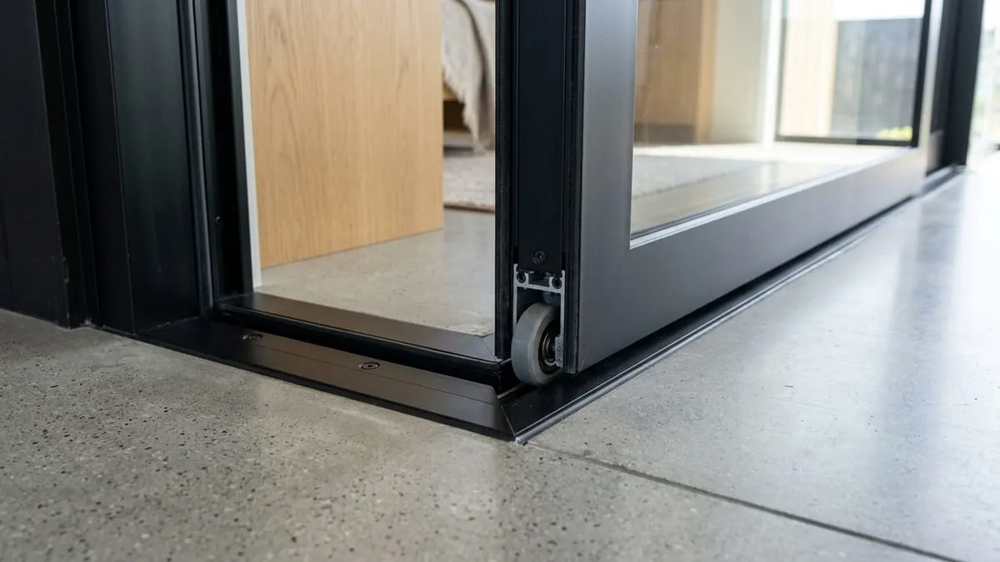

Tips Memilih Pintu Sliding Aluminium Hemat Ruang untuk Kos-Kosan di Singosari

📌 Ringkasan Inti
Pintu sliding aluminium menjadi solusi efisiensi ruang terbaik untuk properti kos-kosan di Singosari. Dengan mekanisme geser horizontal yang tidak memakan radius putar pintu ayun konvensional, kamar kos berdimensi kompak tetap terasa lapang, rapi, dan bernilai sewa tinggi.
- Pintu sliding aluminium menghemat ruang karena bergerak menyamping mengikuti rel, bukan berayun ke dalam kamar.
- Pengukuran bukaan pintu perlu dilakukan secara presisi agar rel geser dan roda bearing berfungsi lancar jangka panjang.
- Pilihan ketebalan profil aluminium (1.1 mm – 1.35 mm) memengaruhi kekakuan daun pintu dan daya tahan benturan.
- Perawatan berkala pada rel geser dan roda teflon membantu mencegah pintu seret maupun anjlok dari dudukannya.
- Pilihan sliding door aluminium murah singosari dengan desain standar memudahkan pemilik kos menghemat anggaran renovasi.
Pintu sliding aluminium menjadi pilihan tepat untuk kos-kosan di Singosari karena tidak membutuhkan ruang ayun seperti pintu engsel biasa. Pintu ini sangat cocok untuk kamar kos berukuran terbatas yang banyak dicari mahasiswa dan pekerja industri di koridor strategis Malang-Surabaya tersebut.
Apa Itu Pintu Sliding Aluminium Untuk Kos-Kosan
Pintu sliding aluminium adalah sistem pintu geser berbahan rangka aluminium ekstrusi yang bergerak horizontal menyamping mengikuti rel pemandu, tanpa memerlukan radius ayunan 90 derajat layaknya pintu engsel konvensional. Model pintu geser ini banyak diaplikasikan untuk kamar kos di kawasan Singosari karena dimensi luas kamar yang umumnya berada di rentang 3x3 meter hingga 3x4 meter.
Dengan beralih ke sistem bukaan geser, penghuni kamar kos dapat menempatkan lemari pakaian, meja belajar mahasiswa, atau rak buku tepat di dekat area pintu masuk tanpa risiko terbentur saat daun pintu dibuka. Bobot profil aluminium yang ringan namun kokoh juga memudahkan penghuni membuka dan menutup pintu dengan satu dorongan jari tangan secara ergonomis.

Kenapa Pintu Sliding Aluminium Cocok Untuk Kos-Kosan
Pintu sliding aluminium sangat ideal untuk hunian sewa kos di Singosari karena menawarkan efisiensi ruang gerak maksimal, kemudahan perawatan harian, dan ketahanan tinggi terhadap kelembapan dibanding pintu kayu triplek. Mengingat sebagian besar penghuni kos adalah kalangan mahasiswa dan karyawan dinamis, kepraktisan akses menjadi nilai tambah yang sangat dihargai.
Di samping hemat area lantai hingga 1.5 meter persegi, bahan aluminium tidak akan pernah mengalami masalah lapuk, keropos dimakan rayap, atau melengkung akibat pergantian musim kemarau ke musim hujan yang lembap di Singosari. Pemilik rumah kos juga tidak perlu mengalokasikan anggaran tahunan untuk mengecat ulang atau memvernis kusen, cukup dibersihkan dengan kain lap basah berkala.
Bagi para investor dan juragan kos yang membangun puluhan kamar sewa sekaligus, memesan sliding door aluminium murah singosari dengan ukuran standar seragam sangat menghemat ongkos fabrikasi dan mempercepat durasi penyelesaian proyek bangunan secara signifikan.
Paket Pintu Sliding Kamar Kos Singosari & Malang Murah Berkualitas
Solusi pintu geser aluminium awet tahan banting untuk kamar kos, ruko sewa, dan villa: profil aluminium tebal, rel gantung halus, kunci sliding kokoh, dan garansi pasang resmi.
Bagaimana Cara Mengukur Bukaan Pintu Geser Yang Presisi
Pengukuran bukaan dinding yang presisi menjadi fondasi utama keberhasilan pemasangan pintu sliding aluminium. Kekeliruan ukuran beberapa milimeter saja berpotensi menyebabkan daun pintu seret, bergesekan dengan lantai keramik, atau meninggalkan celah celong tempat debu dan nyamuk masuk ke kamar tidur.
| Langkah Pengukuran | Metode Teknis Lapangan | Tujuan & Antisipasi |
|---|---|---|
| 1. Ukur Lebar 3 Titik | Ukur jarak opening dinding di posisi atas, tengah, dan bawah menggunakan meteran baja. | Pilih nilai terkecil sebagai acuan pembuatan kusen luar. |
| 2. Cek Ketinggian Opening | Ukur elevasi dari lantai keramik finishing ke ambang atas dinding di sisi kiri, tengah, dan kanan. | Mengantisipasi ketidakrataan elevasi lantai semen/keramik. |
| 3. Tentukan Arah Geser | Tinjau denah interior kamar kos, pilih arah dorong ke sisi dinding yang bebas hambatan. | Memastikan bukaan daun pintu tidak membentur sakelar atau stopkontak. |
| 4. Alokasikan Dinding Parkir | Pastikan lebar dinding samping minimal sama dengan lebar daun pintu geser yang terpasang. | Agar pintu dapat terbuka 100% secara maksimal saat keluar-masuk. |
Setelah seluruh dimensi dicatat, berikan toleransi clearance sekitar 5 mm hingga 8 mm pada sisi luar kusen aluminium. Ruang celah ini nantinya diisi dengan sealant silikon netral elastis untuk mengunci kusen dengan plesteran bata secara kedap air dan kedap udara.
Apa Saja Tips Memilih Pintu Sliding Aluminium Hemat Ruang
Tips utama dalam memilih pintu sliding untuk kawasan kos di Singosari adalah menitikberatkan pada ketebalan profil tiang dan kualitas komponen roda bearing. Mengingat pintu kos dioperasikan belasan kali setiap hari oleh penghuni yang berbeda-beda, komponen mekanikal yang tangguh adalah investasi jangka panjang yang mutlak:
- Pilih Ketebalan Profil Minimal 1.1 mm: Profil aluminium standar 3 inch atau 4 inch dengan ketebalan 1.1 mm hingga 1.35 mm (seperti Alexindo atau Forta) menjamin daun pintu tidak goyang atau melengkung saat didorong cepat.
- Gunakan Roda Geser Berbantalan Nilon / Teflon: Roda dengan double ball bearing berlapis nilon menghasilkan pergerakan daun pintu yang sangat senyap (silent glide), sehingga tidak mengganggu tetangga kamar sebelah saat pintu digeser di tengah malam.
- Pilih Kaca Buram Es (Frosted Glass) atau Spandrel: Untuk pintu kamar mandi atau pintu penghubung balkon kos, kaca buram es memberikan privasi penuh bagi penghuni sembari tetap meloloskan cahaya matahari siang.
- Pasang Kunci Kait (Mortise Hook Lock) Berkualitas: Sistem kunci kait geser berbahan stainless steel SUS 304 menjamin keamanan barang berharga penghuni kamar kos dari upaya congkel paksa.
"Kunci utama kenyamanan pintu sliding di kos-kosan Singosari terletak pada kualitas roda bearing dan kelurusan rel pemandu atas. Kami selalu memakai rel berpresisi tinggi dengan stopper karet peredam benturan, agar pintu tidak berisik saat didorong anak kos dan roda tidak gampang terlepas dari jalurnya."
Kesalahan Umum Saat Memasang Pintu Sliding Aluminium
Kesalahan paling umum yang sering kami jumpai di lapangan adalah tidak memperhitungkan ruang dinding parkir geser di samping opening bukaan. Akibatnya, saat daun pintu dibuka penuh, gagang pintu menabrak dinding atau hanya dapat terbuka separuh jalan sehingga menyulitkan penghuni memasukkan barang berukuran besar seperti kasur springbed atau lemari.
Kesalahan kedua adalah memilih rel geser murahan berbahan seng tipis yang tidak tahan terhadap beban gantung kaca. Dalam hitungan beberapa bulan, rel melengkung ke bawah sehingga daun pintu menyeret keramik lantai. Pemasangan tanpa bantuan waterpass presisi juga memicu pintu bergeser sendiri (meluncur bebas) akibat kemiringan rangka kusen.
Kesimpulan Praktis
Pintu sliding aluminium merupakan solusi arsitektur hemat ruang paling cerdas dan efisien untuk kos-kosan di Singosari. Dengan pengukuran bukaan dinding yang cermat, pemilihan roda bearing halus, serta profil aluminium tahan cuaca bergaransi, Anda dapat meningkatkan daya tarik estetika dan nilai sewa kamar kos tanpa khawatir biaya perbaikan berulang kali di kemudian hari.
Pertanyaan Seputar Pintu Sliding Kos Singosari
Ya, karena pintu sliding bergerak menyamping mengikuti rel horizontal, sehingga tidak memerlukan ruang ayun (swing radius) seperti pintu engsel konvensional.
Harga bervariasi tergantung ukuran bukaan dinding, ketebalan profil aluminium (1.1 mm atau 1.35 mm), serta jenis kaca yang dipilih. Pemilik kos dapat meminta rincian penawaran transparan langsung ke aplikator resmi di Malang.
Sangat cocok, karena mekanisme geser menyamping tidak memakan ruang gerak di dalam kamar, sehingga penataan lemari pakaian dan meja belajar mahasiswa menjadi jauh lebih leluasa.